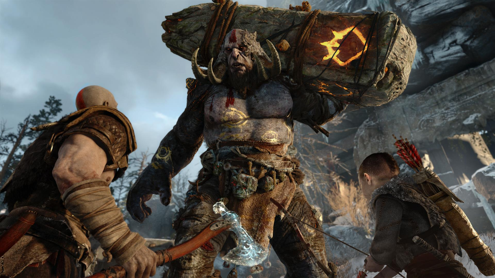

What is God of War?
God of War is an action-adventure game franchise created by Santa Monica Studio which is owned by Sony. The games are all playstation exlusives and are not able to be played on through any other platform. The first God of War games were made for the PS2 and are now still continuing to be made on the PS5. Every single game within the franchise is critically acclaimed and is reconized to be one of the best gaming franchises in playstation and in general.

Critical Reception
The series has been recognized with numerous awards, including "Game of the Year" and accolades for graphics and innovation, particularly for entries like God of War III and the 2018 reboot, which revitalized the series with its narrative depth and use of Norse mythology. Despite its success, the franchise has faced criticism for aspects like puzzle design, weapon variety, and technical issues. Collections like the God of War Collection have been praised for enhancing the experience of the original games. However, even with some criticisms, particularly regarding Ascension's multiplayer and the late unlock of fast travel in the 2018 title, God of War remains a benchmark in action gaming, celebrated for pushing the boundaries of storytelling, graphical fidelity, and gameplay within the genre.
